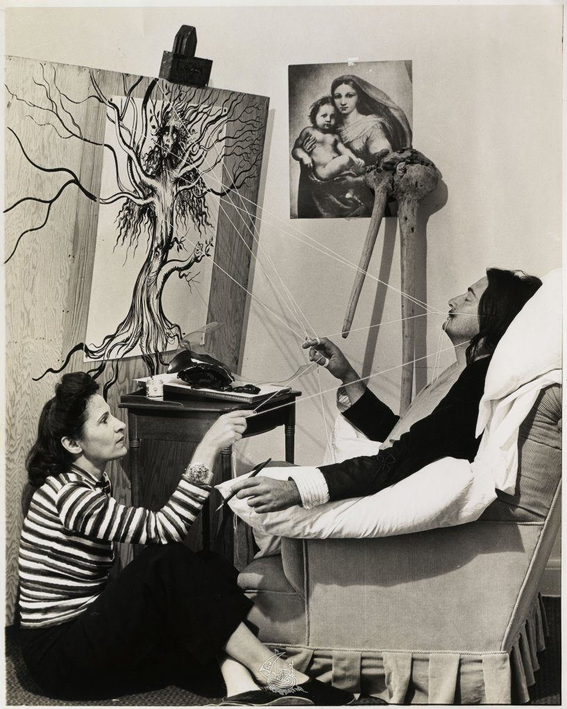
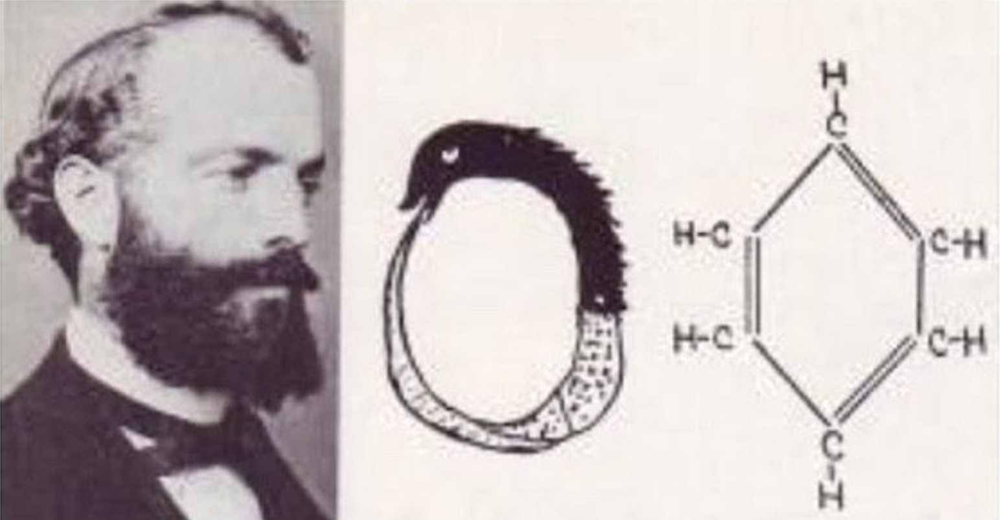

Thomas Edison sleeping at Ford Edison Camp in Hagerstown Maryland, with President Harding. Edison reportedly dozed off to sleep for just the right amount of time for his brain to make random connections.
"You will have to merely let yourself be invaded by an afternoon sleep...
...The moment the key drops from your fingers, you may be sure that the noise of its fall on the upside-down plate will awaken you, and you may be equally sure that this fugitive moment when you had barely lost consciousness...

Salvador Dali during the period of writing 50 Secrets of Magic Craftsmanship in Del Monte Lodge, 1947. Dali reportedly used the same technique as Edison to spark inspiration.

August Kekule dreamt of the structure of the benzene ring in a dream about a serpent chasing their tail.
and not a second more is needed for your whole physical and psychic being to be revived by just the necessary amount of repose."
- Salvador Dali, 50 Secrets of Magic Craftsmenship